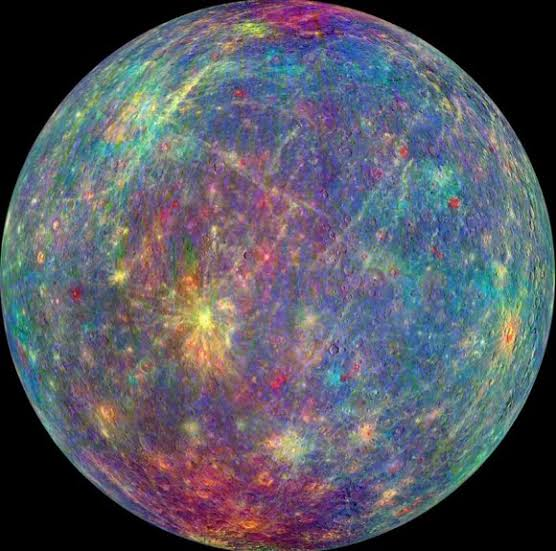
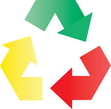
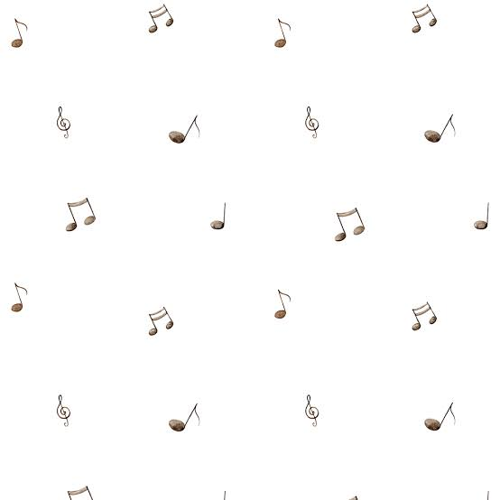

Projetos em destaque

Planeta das Cores
Uma jornada interativa feita com p5.js. Ao clicar nas esferas planetárias, o usuário muda as cores do espaço e ouve sons diferentes. Cada planeta representa uma emoção com paletas e tons únicos.

ClickRecicle: Reciclagem Interativa
Versão p5.js do EcoClick! Agora, você clica nos lixos e arrasta até a lixeira certa. O sistema avalia se o lixo foi descartado corretamente, somando pontos e mostrando dicas de sustentabilidade.

RitmoMemória: Desafio de Notas
Inspirado no jogo Genius, este projeto usa p5.js para testar sua memória auditiva. Sequências de cores e sons tocam em ordem crescente, e você precisa repetir. Cada erro reinicia o jogo.